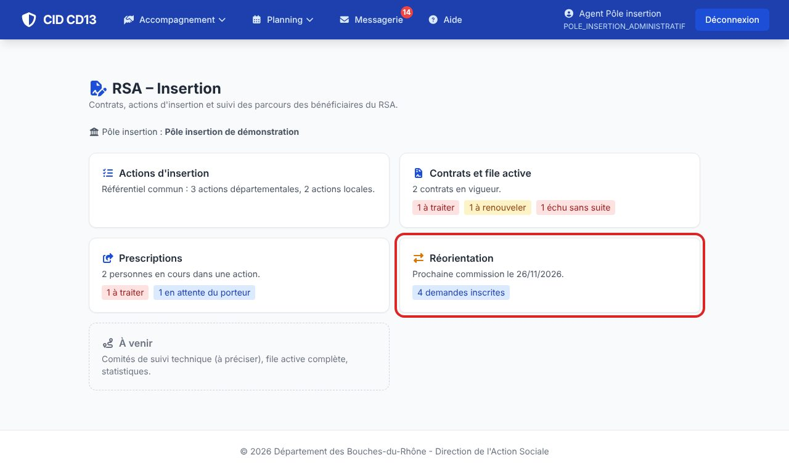
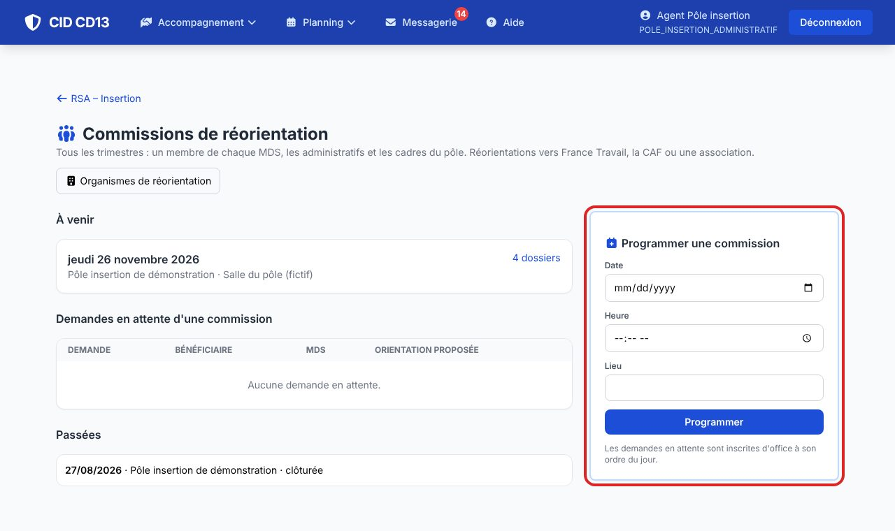
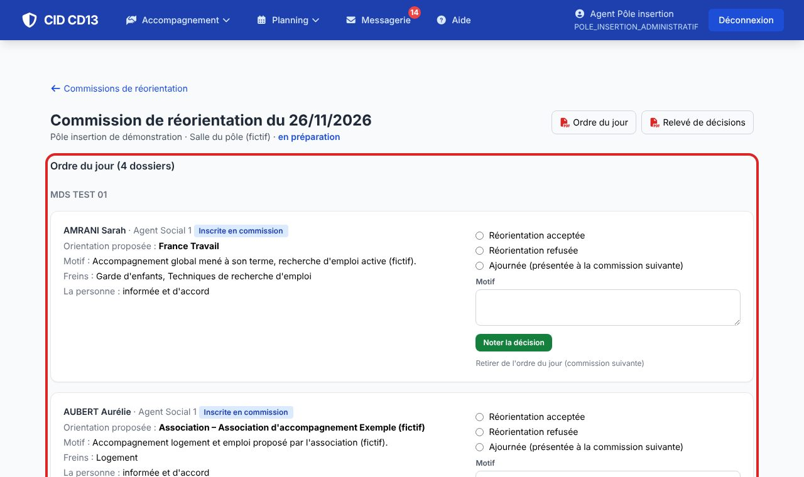
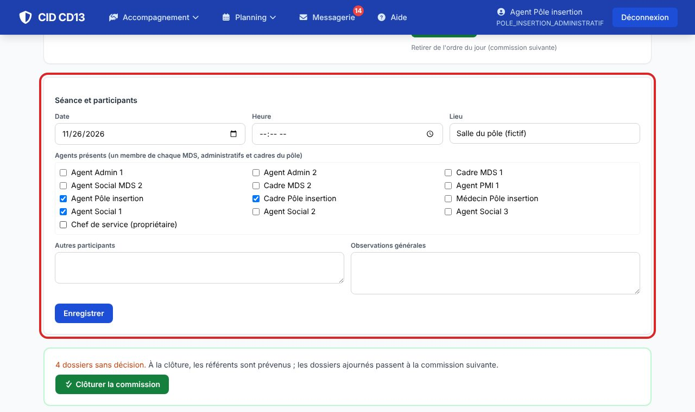
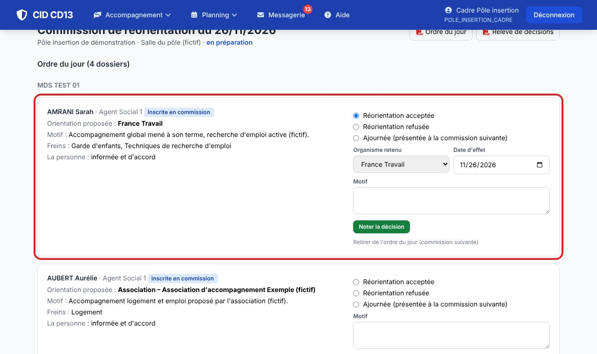
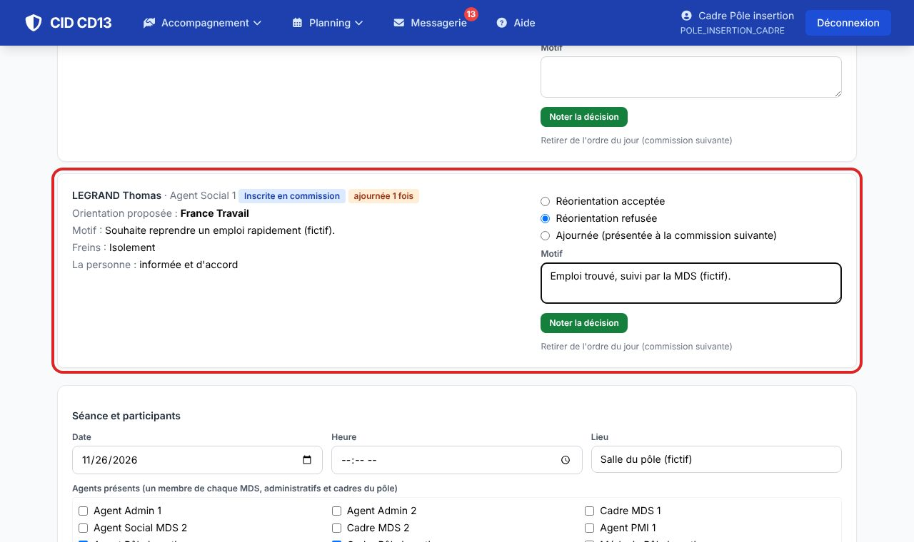
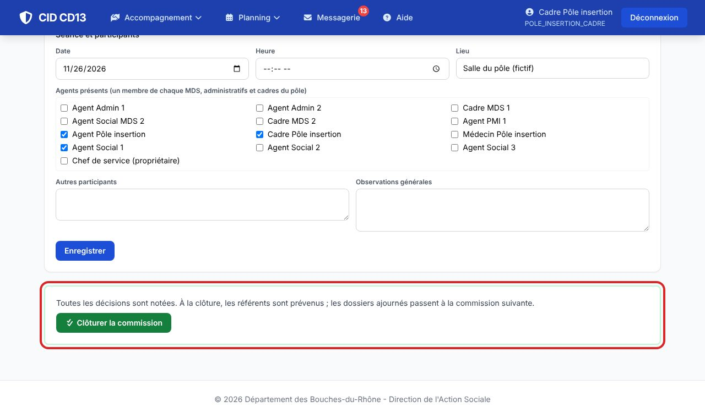
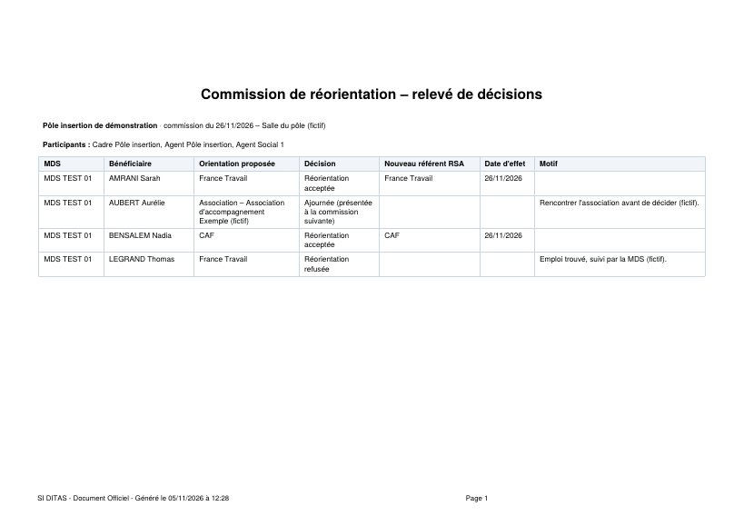
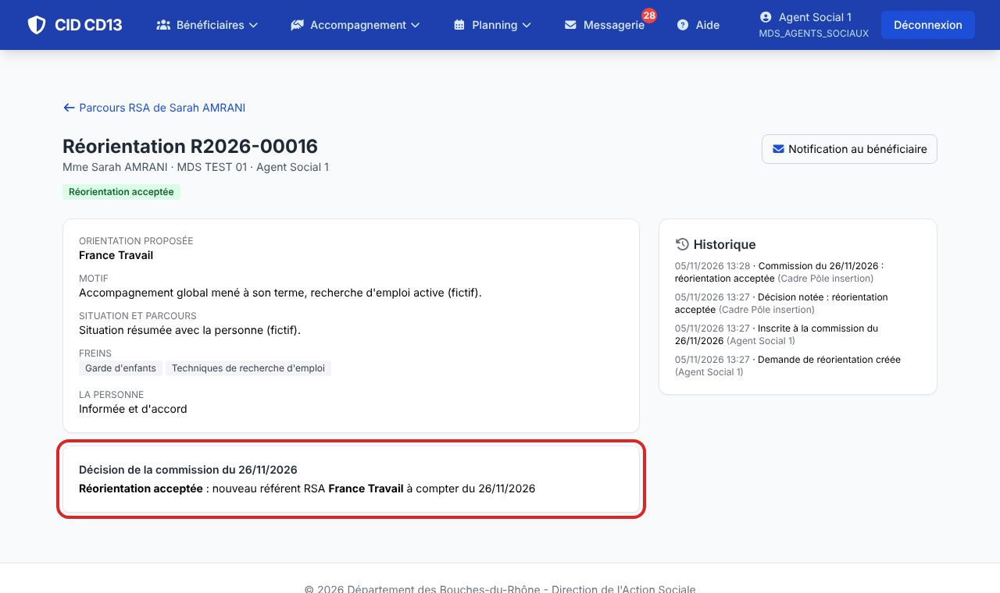
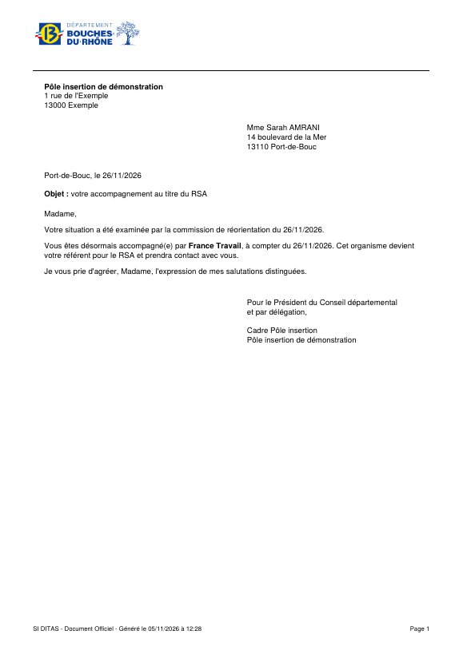

1Programmer la commission


- Indiquez la date, l'heure et le lieu : toutes les demandes en attente sont inscrites d'office à l'ordre du jour.
- Les demandes inscrites ensuite rejoignent automatiquement la prochaine commission.
2Préparer la séance


- L'Ordre du jour (PDF) se distribue aux membres.
- Cochez les agents présents et notez les autres participants.
- Un dossier peut être retiré de l'ordre du jour : il passe à la commission suivante.
3Noter les décisions


- Acceptée : l'organisme retenu et la date d'effet. Refusée ou ajournée : le motif est obligatoire.
- Une décision se corrige tant que la commission n'est pas clôturée.
4Clôturer


- Clôturer la commission (toutes les décisions notées) : les référents sont prévenus, les dossiers ajournés passent à la commission suivante.
- Le Relevé de décisions (PDF) garde la trace de chaque dossier examiné, ajournés compris.
5Informer la personne


- Sur chaque demande décidée, la Notification au bénéficiaire (PDF) reprend la décision et les coordonnées du nouveau référent ; son texte se modifie dans les modèles de courriers.
Bon à savoir
- Les demandes en préparation ne sont pas visibles du pôle : seulement une fois inscrites.
Cliquez sur une image pour l'agrandir. Le cadre rouge montre où cliquer ou quoi remplir. Toutes les données affichées sont fictives.